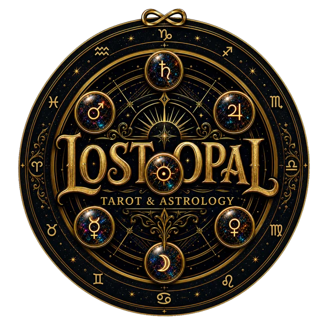

Ways to givePublic and live-stream readings are free. If the work helped you, or you value the message of Lost Opal, you are welcome to donate.
You owe me nothing.
I do not hold money in my heart.
Secure payments
Choose whichever service is most convenient for you.
Credit or debit cardSecure Stripe checkout through Ko-fi
 PayPalUse your PayPal account
PayPalUse your PayPal account
 Cash App$lostopaltarot
Venmo@lostopaltarot
Cash App$lostopaltarot
Venmo@lostopaltarot
PayPalUse your PayPal account
Cash App$lostopaltarot
Venmo@lostopaltarot
Each option opens the official payment service in a new tab. Lost Opal never receives or stores your card or account details.
Thank you!
— Opal